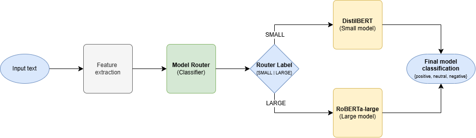

Linguistically Aware Model Routing for Financial Sentiment Analysis
Spring 2026 CSCI 5541 NLP: Class Project - University of Minnesota
TrustTheTokens
Hema Poojitha Chandu

Samantha Ballesteros
Hema Poojitha Chandu
Samantha Ballesteros
Motivation: The objective of this project is to create a model router for financial text (specifically sentiment analysis) in order to balance tradeoffs in accuracy and computational/monetary efficiency between small and larger language models (LMs).
Approach: To accomplish this, we have cleaned a dataset (Financial PhraseBank, and Financial Tweets Sentiment from Hugging Face), extracted linguistic features from each sample, and have finetuned a "small" LM (DistilBERT) and a "large" LM (RoBERTa-large). Next, we will perform an error analysis on the small LM outputs. Finally, we will train a classifier (the model router) to label a sample as either best suited for the small model or the large model.
Preliminary Results: On the PhraseBank-only test set, the fine-tuned DistilBERT achieves 94.02% accuracy (macro-F1 0.9206), nearly matching FinBERT's zero-shot 94.59%. On the harder combined dataset (PhraseBank + Financial Tweets, ~41k samples), the fine-tuned DistilBERT achieves 82.79% accuracy (macro-F1 0.8196), providing a meaningful gap for the large model and router to close. Building on this, fine-tuning RoBERTa-large on the combined dataset resulted in 87.64% accuracy indicating strong performance on more diverse financial text.
The diagram below illustrates the routing flow: each input is first processed by the small model (DistilBERT). The router then examines the small model's confidence and the input's linguistic features to decide whether to accept the small model's prediction or escalate to the large model (RoBERTa-large).

What did you try to do? What problem did you try to solve? Articulate your objectives using absolutely no jargon.
A task that financial institutions often need to execute is to determine whether text such as news articles, earnings calls, and financial reports carry a positive, negative, or neutral message. Big, powerful AI models do this well but are slow and expensive to run on thousands of documents. Small, cheap models are fast but can make more mistakes on difficult sentences. Our goal was to create a router that is trained to determine whether to send the text to the smaller model or the larger model, balancing cost and performance based on confidence and linguistic elements (average word length, negation terms like "not", etc.).
How is it done today, and what are the limits of current practice?
Today, most sentiment systems rely on a single model applied to all inputs. Either a small, cheaper model that sacrifices accuracy, or a larger, expensive model that is impractical at scale.
More recent work has explored routing between models. Hybrid LLM frameworks like the one proposed by Ding et al. show that selectively sending inputs to a larger model, rather than always using it, can preserve quality while cutting cost. However, these systems route based purely on model confidence, without considering anything about the language itself.
In the financial domain, HSMoE-FSA uses entropy-based routing across 15 parallel expert models. Instead of optimizing for cost-savings and accuracy, the system purely optimizes for accuracy. Instead of running one model, it runs all models at the same time and fuses the outputs.
A common thread across existing systems is they do not examine why a statement is difficult to classify, nor do they incorporate linguistic properties of the input. We aim to address these gaps by using hedging language, negation, and syntactic complexity as signals for routing.
Who cares? If you are successful, what difference will it make?
This domain-specific model router is naturally applicable to financial firms or any organization seeking to perform financial sentiment analysis at scale both accurately and efficiently. A successful router would allow practitioners to obtain near-large-model accuracy at a fraction of the cost, making high-quality sentiment analysis accessible even under tight computational budgets.
What did you do exactly? How did you solve the problem? Why did you think it would be successful? Is anything new in your approach?
Our system was built in various stages as reflected in the list below.
distilbert-base-uncased (untrained 3-class head) and
ProsusAI/finbert (pre-trained financial sentiment model)
on both the PhraseBank-only and combined test sets.
distilbert-base-uncased with a 3-class
classification head on the training split using HuggingFace Trainer
(lr = 2e-5, batch size = 16,
max epochs = 5, weight decay = 0.01,
warmup ratio = 0.1, early-stopping patience = 2).
Best checkpoint selected by macro-F1 on the validation set.
roberta-large-mnli on both the PhraseBank-only and combined test sets.roberta-large with a 3-class classification head on the PhraseBank split and the combined dataset using HuggingFace Trainer.What problems did you anticipate? What problems did you encounter? Did the very first thing you tried work?
The dataset we originally intended to use was Financial PhraseBank in isolation. We suspected that it might be too small, and this was confirmed when we fine-tuned DistilBERT on the dataset and achieved 94.02% accuracy on the test set, which left little room for improvement with RoBERTa-large. To mitigate this, we found another dataset, Financial Tweets Sentiment, which combines other reputable financial sentiment datasets for a total of ~41k samples. On this combined dataset, the fine-tuned DistilBERT achieves 82.79% accuracy, providing a meaningful gap for the large model and router to close. We also observed that a RoBERTa‑large model trained only on PhraseBank failed to generalize to the combined dataset, achieving just 53.58% accuracy on the combined test set. This confirmed that the expanded corpus introduces a substantial domain shift and motivated us to train the large model directly on the combined data.
How did you measure success? What experiments were used? What were the results, both quantitative and qualitative? Did you succeed? Did you fail? Why?
We will measure success with various metrics comparing the small model, large model, purely confidence-based router, and the linguistically-aware router (our solution). These metrics will include, but are not limited to, accuracy, escalation rate (sent to large model), and average latency.
The goal for accuracy would be to surpass that of the small model and to have an accuracy gap recovery of at least 0.9 (achieving at least 90% of the large model's performance).
| Model | Accuracy | Macro-F1 |
|---|---|---|
| DistilBERT zero-shot | 0.2239 | 0.1732 |
| FinBERT zero-shot | 0.9459 | 0.9346 |
| DistilBERT fine-tuned | 0.9402 | 0.9206 |
| Model | Accuracy | Macro-F1 |
|---|---|---|
| DistilBERT zero-shot | 0.4358 | 0.2136 |
| FinBERT zero-shot | 0.5015 | 0.4950 |
| DistilBERT fine-tuned | 0.8279 | 0.8196 |
Detailed confusion matrices and per-class classification reports for all of the above experiments (both datasets, validation and test splits) can be found on the small model results page.
| Model | Accuracy | Macro-F1 |
|---|---|---|
| Roberta-large-mnli zero-shot (PhraseBank) | 0.5792 | 0.5825 |
| Roberta-large-mnli zero-shot (Combined) | 0.5751 | 0.5376 |
| RoBERTa-large fine-tuned (PhraseBank) | 0.9614 | 0.9446 |
| RoBERTa-large fine-tuned (Combined) | 0.8764 | 0.8697 |
Detailed confusion matrices and per-class classification reports for all large-model experiments (across both datasets and splits) can be found on the large model results page .
| Experiment | Accuracy | Macro-F1 | Escalation Rate | Average Latency |
|---|---|---|---|---|
| DistilBERT fine-tuned (small) | 0.8279 | 0.8196 | 0% | 100% |
| RoBERTa-large (large) | 0.8764 | 0.8697 | 100% | 0% |
| Confidence-based router | TBD | TBD | TBD | TBD |
| Linguistically-aware router | TBD | TBD | TBD | TBD |
How easily are your results able to be reproduced by others? Did your dataset or annotation affect other people's choice of research or development projects to undertake? Does your work have potential harm or risk to our society? What kinds? If so, how can you address them? What limitations does your model have? How can you extend your work for future research?
TBD